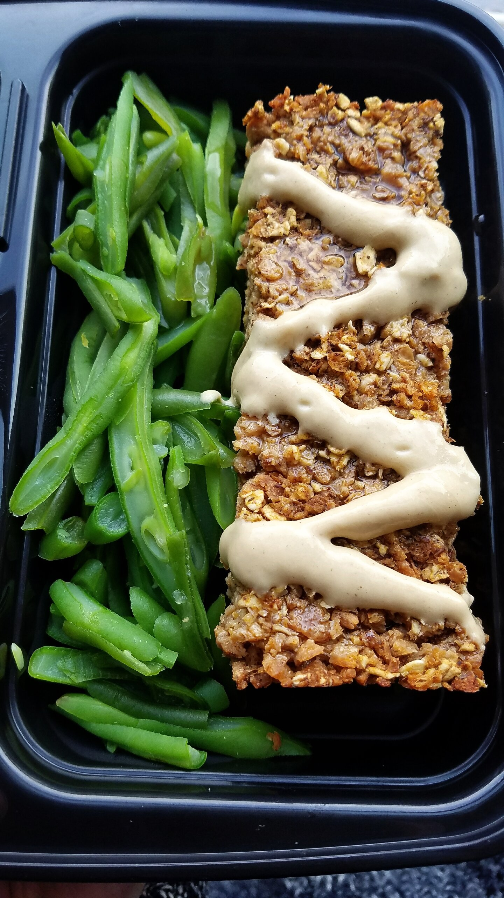
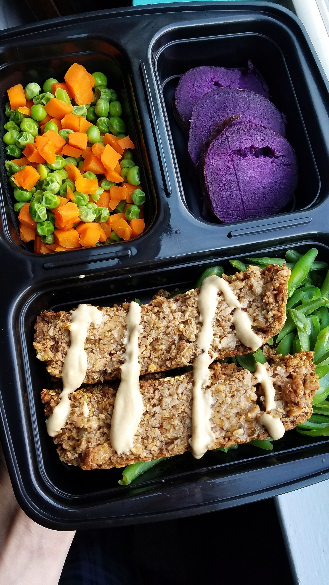
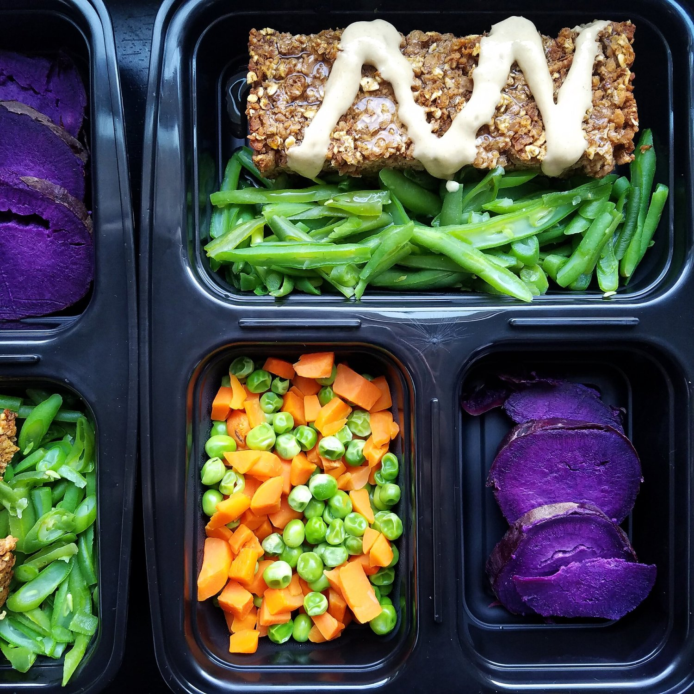

Chili Pumpkin Meatlessloaf (VEGAN)



A comforting, fall-inspired chili pumpkin meatlessloaf for the vegan in all of us. This recipe only requires 7 ingredients and simple baking, making it perfect for a meal prep recipe to make for the week ahead. Not only is this recipe meat-free and fully vegan, it is gluten free as well!
Shoutout to anyone that remembers or still makes my chili pumpkin turkey meatloaf recipe. More than three years ago, this weird combination idea of pumpkin and chili hit me hard, and I'm so glad I tried it out that day. Year after year when the fall season comes, I get tagged in images of people making that recipe for meal prep, family dinners, friends, and more. Many a' meatloaf-hating people have been converted from the recipe hahah. Sadly, I haven't been able to enjoy this recipe for nearly two years now after becoming vegan. I've been really wanting to make a vegan version, but I've also been intimidated by the thought of attempting a vegan loaf. I didn't know what would be best - TVP (texturized vegetable protein), lentils, what?? How would it stay firm together?? No other way to find out than just trying, so I finally took the plunge. And...success!!!
I made this fully from TVP, but I do want to try a version with lentils added as well. Just because I love lentils hahah. This meatlessloaf recipe is hearty and dense, flavorful, sweet yet savory....everything I love about the original version, minus the cruelty. It may sound like such a weird combination of flavors, but just trust me and literally 100+ others who have tried it and love it. If you've been looking for a vegan version as well, here you go! This recipe is great because one serving alone has 22 grams of protein in it. "But where do you get your protein???" hmmmm....here.
As always, I topped mine with Tessemae's all-natural dijon mustard and some maple syrup. I still don't know why these flavors work so majestically, but I'm going with it. If you're looking for something new to try that's not daunting, MAKE THIS! The only thing I ask - join me in the wonderfulness. I promise you it'll be great.
Chili Pumpkin Meatlessloaf
Serves: 5
-
2 cups vegetable broth (or water)
-
2 cups of dry TVP granules
-
1 cup of quick oats
-
1/2 cup canned pumpkin puree
-
2 TBSP ground flaxseed
-
2 tsp chili powder
-
2 tsp pumpkin pie spice
-
1 tsp cinnamon
Preheat the oven to 350 F. In a large skillet, rehydrate the TVP granules by cooking over a medium heat with the vegetable broth. Once the liquid is soaked up and the TVP is no longer dry, add the dry oats, pumpkin puree, flaxseed, and spices. Stir well. Spray a bread loaf pan with nonstick spray and add the TVP mixture into the pan. Press down firmly on the surface in order to pack it down. Bake at 350 F for 30-35 minutes, until lightly crisp on top and solid throughout. Let cool for 10-15 minutes, then cut into 5 pieces and enjoy!
Nutrition Information for 1 slice: 210 calories; 3 g fat, 25 g carbs (9 g fiber), and 22 g protein